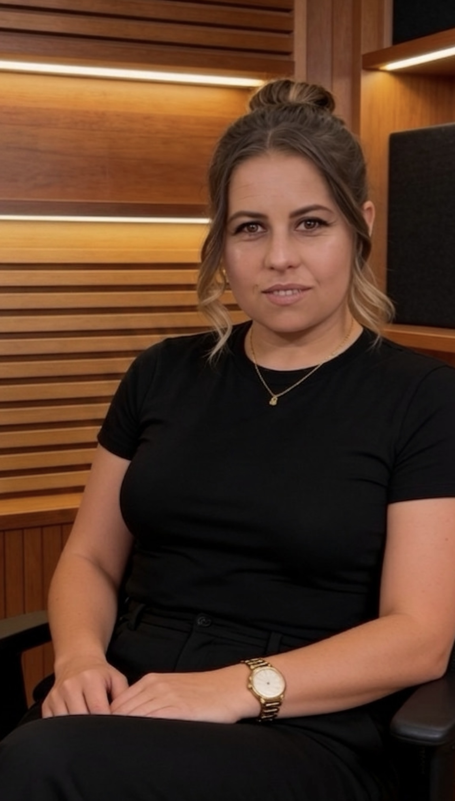
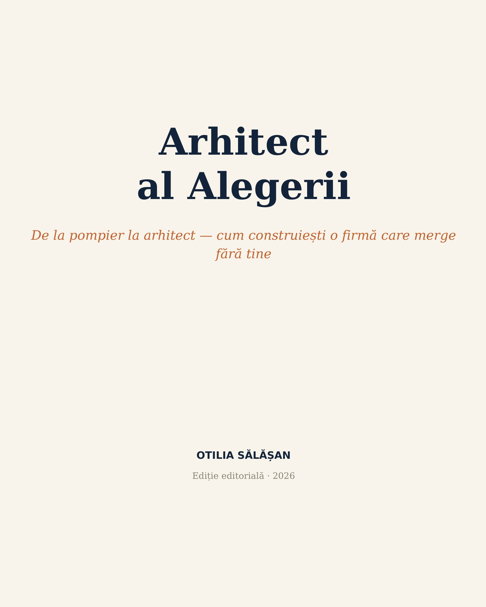

Arhitect de business (sistematizare, automatizare, vizibilitate online), manager de proiect, antreprenor și formator — te ajut să treci de la pompierul propriei afaceri, la arhitectul unui sistem care rulează și fără prezența ta constantă.
Alergi de dimineață până seara, stingi incendii, răspunzi la orice întrebare, ești singurul care știe exact cum merg lucrurile. Dacă lipsești o zi, ceva se blochează. N-ai construit o firmă — ai construit un loc de muncă din care nu poți pleca.

Arhitect de business, manager de proiect, autoare — și, chiar acum, antreprenor la prima mână, construind o afacere de la zero. Programul se bazează pe literatura de specialitate în management și pe 10 ani de ucenicie — proiecte europene și diverse organizații, învățând direct de la oameni care știau deja ce fac. Povestea completă →
Programul „Microîntreprinderea care Rulează" nu e teorie — e un roadmap aplicat, de 2 luni, ca firma ta să înceapă să ruleze și fără prezența ta constantă.
O discuție scurtă, ca să văd dacă programul e potrivit pentru situația ta acum.
Sesiuni live + 2 vizite fizice — nu doar teorie, ci sisteme construite pe cazul tău real.
La final: procese scrise, oameni care știu ce au de făcut, o firmă care nu se oprește când lipsești o zi.
De la pompier la arhitect — cum construiești o firmă care merge fără tine. Tot ce înveți în „Microîntreprinderea care Rulează" pornește din paginile astea: gândire sistemică, asumare extremă, psihologia grupului, organizația care învață, arhitectura alegerii.
„Tu creezi sistemul. Totul depinde de tine. Dacă nu merge, înseamnă că nu ai fost clar."

„Tu creezi sistemul. Totul depinde de tine. Dacă nu merge, înseamnă că nu ai fost clar."
Introducere„Pompierul se trezește cu o alarmă. Arhitectul se trezește cu un scop."
Capitolul 1„Nu cauți vinovatul în om. Cauți greșeala în design."
Capitolul 2„Structura produce comportamentul, nu caracterele."
Capitolul 3„Norma bate regula. Întotdeauna."
Capitolul 4„Aranjează raftul, nu comanda clientul."
Capitolul 7„N-ai avut niciodată nevoie de mai multă muncă. Ai avut nevoie de mai bună arhitectură."
ÎncheiereMai lucrez și cu fonduri europene, automatizări și vizibilitate online — dar programul de mai sus e locul de start.
Programul „Microîntreprinderea care Rulează" e construit exact pentru acest moment.